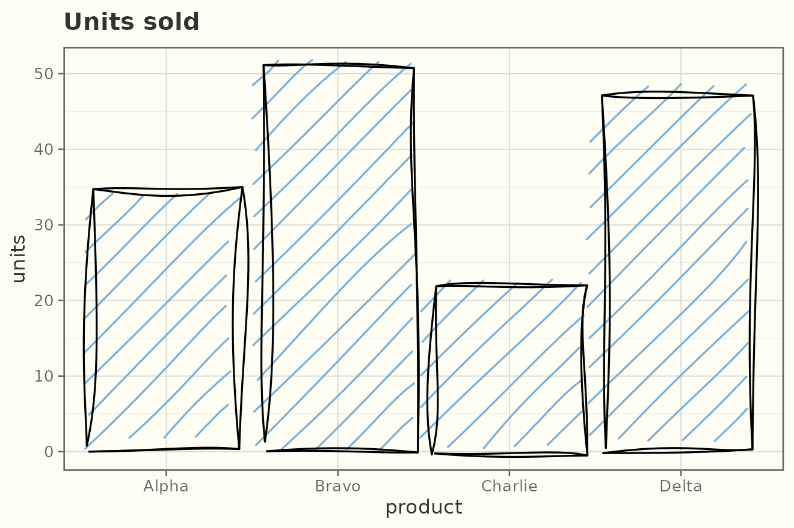
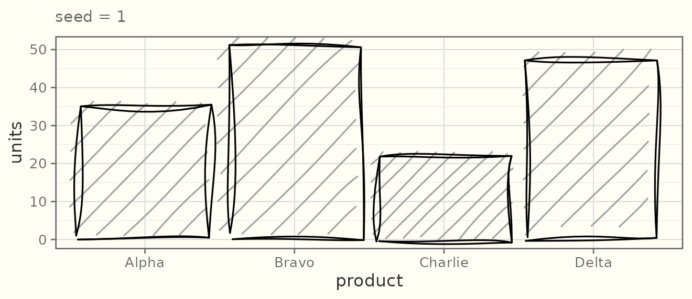
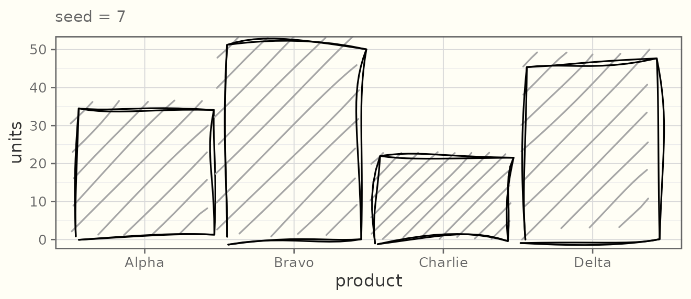
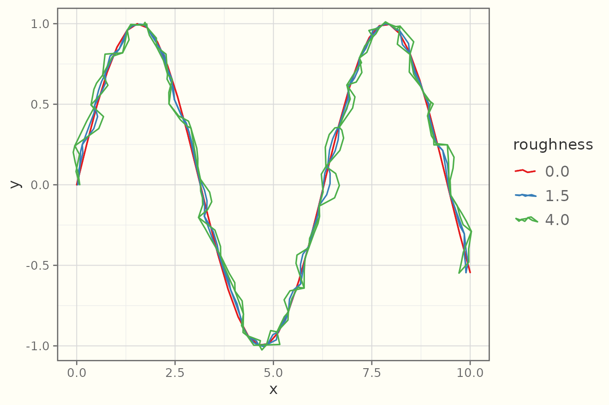
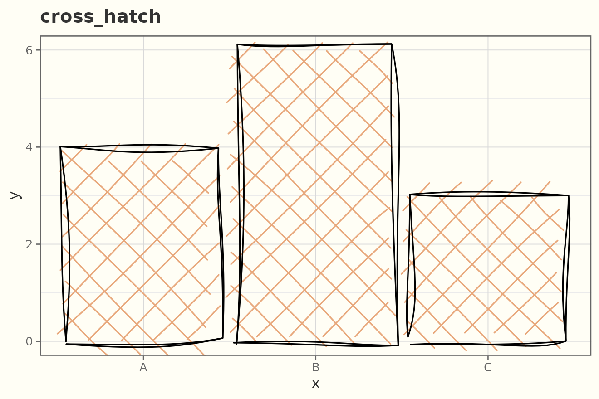
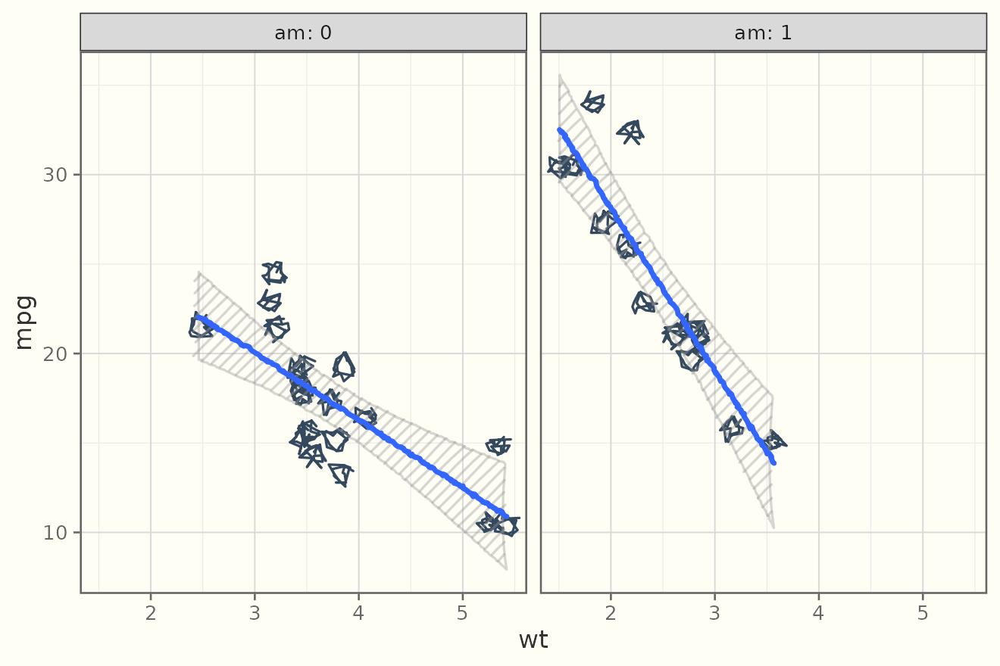
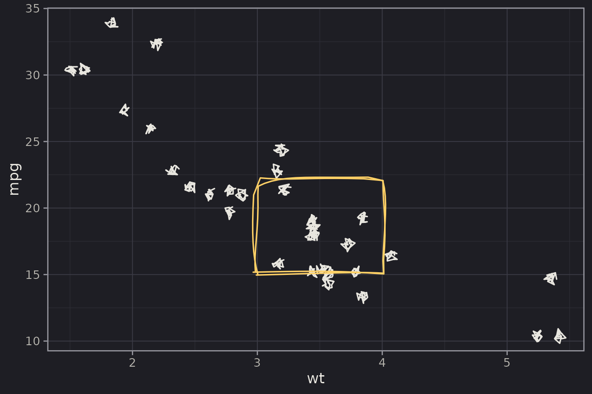

ggsketch adds hand-drawn (“sketchy”) geoms to ggplot2.
They are real ggplot2 layers, so they compose with aes(),
stats, scales, facets, and coords, and they render on every graphics
device — no JavaScript, no browser.
A first plot
geom_sketch_col() draws bars with a roughened outline
and a hachure (pencil-shading) fill:
df <- data.frame(product = c("Alpha", "Bravo", "Charlie", "Delta"),
units = c(34, 51, 22, 47))
ggplot(df, aes(product, units)) +
geom_sketch_col(fill = "#7BAFD4", seed = 1L) +
labs(title = "Units sold") +
theme_sketch()
Reproducible wobble
The sketch look is random, but seeded — a given
seed always produces the same drawing, so your figures are
reproducible. Change the seed for a fresh “hand”.
base <- ggplot(df, aes(product, units)) + theme_sketch()
base + geom_sketch_col(seed = 1L) + labs(subtitle = "seed = 1")
base + geom_sketch_col(seed = 7L) + labs(subtitle = "seed = 7")
Set a session-wide default with
options(ggsketch.seed = 1L).
The roughness dial
roughness controls how far points are displaced (0 =
ruler-straight):
x <- seq(0, 10, length.out = 40)
d <- data.frame(x = x, y = sin(x))
ggplot(d, aes(x, y)) +
geom_sketch_line(aes(colour = "0.0"), roughness = 0, seed = 2) +
geom_sketch_line(aes(colour = "1.5"), roughness = 1.5, seed = 2) +
geom_sketch_line(aes(colour = "4.0"), roughness = 4, seed = 2) +
scale_colour_brewer("roughness", palette = "Set1") +
theme_sketch()
Fill styles
Filled geoms (geom_sketch_col(),
geom_sketch_rect(), geom_sketch_polygon(), …)
take a fill_style:
fill_style is a layer parameter, so to show several you
draw one layer (or panel) per style. Here is
cross_hatch:
bars <- data.frame(x = c("A", "B", "C"), y = c(4, 6, 3))
ggplot(bars, aes(x, y)) +
geom_sketch_col(fill = "#E8A87C", fill_style = "cross_hatch", seed = 4) +
labs(title = "cross_hatch") +
theme_sketch()
The available styles are "hachure",
"cross_hatch", "zigzag",
"zigzag_line", "scribble",
"dots", "dashed", and "solid" —
plus a painted "watercolor" wash.
Composing like any ggplot2 layer
Sketch geoms respect facets, scales, and coords:
ggplot(mtcars, aes(wt, mpg)) +
geom_sketch_point(size = 2.5, colour = "#34495E", seed = 9) +
geom_sketch_smooth(method = "lm", formula = y ~ x, seed = 10) +
facet_wrap(~am, labeller = label_both) +
theme_sketch()
Annotations and a dark theme
ggplot(mtcars, aes(wt, mpg)) +
geom_sketch_point(colour = "#E8E6DF", seed = 1L) +
annotate_sketch("rect", xmin = 3, xmax = 4, ymin = 15, ymax = 22,
fill = NA, colour = "#FFD166", seed = 2L) +
theme_sketch(dark = TRUE)
Beyond the basics
ggsketch covers far more than bars and lines: distribution geoms (violin, ridgeline, beeswarm, boxplot), part-to-whole charts (pie, waffle, treemap), streamgraphs, calendar heatmaps, an engraving / tonal-shading family, and a content-aware annotation toolkit (arrows, callouts, brackets, hull marks). The drawing look extends too — pencil / ink / brush / charcoal media, watercolour fills, textured paper grounds, and hand-drawn coords. The gallery shows every geom; the other articles cover fill styles, theming, and the shared sketch controls in depth.
Where the look comes from
ggsketch is built in three layers: pure geometry
(numbers → numbers), grid grobs that roughen in device-inch space inside
makeContent(), and ggproto geoms. The algorithms are
reimplemented in original R from the published descriptions of the
rough.js algorithms and the hachure approach of Wood et al.; no rough.js
source is included. See inst/NOTICE.